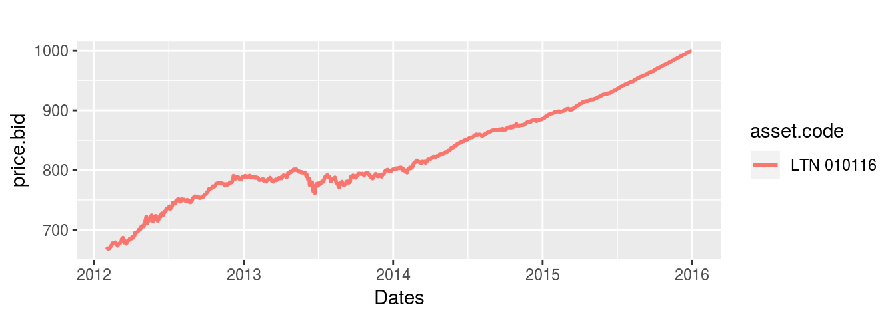
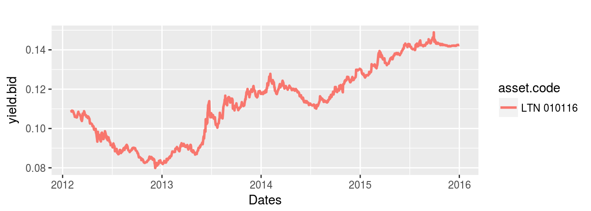
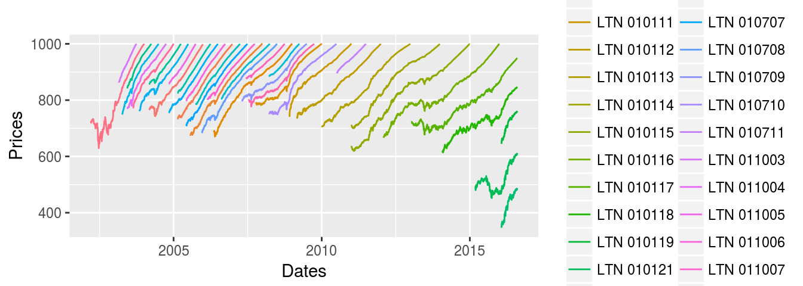
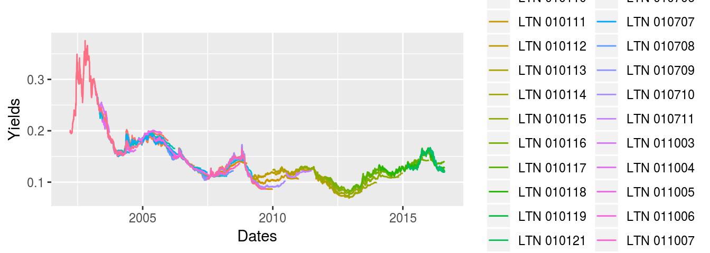

vignettes/gtdd-vignette_GetTDData.Rmd
gtdd-vignette_GetTDData.RmdInformation regarding prices and yields of bonds issued by the Brazilian government can be downloaded manually as excel files from the Tesouro Direto website. However, it can be painful to aggregate all of this data into something useful as the files don’t have an uniform format and are all divided by year and asset code.
Package GetTDData makes the process of importing data from Tesouro direto much easier. All you need is the name of fixed income assets (LFT, LTN, NTN-C, NTN-B, NTN-B Principal, NTN-F) and the desired dates of maturity (e.g. 2016-01-01).
Suppose you need financial data (prices and yields) for a bond of type LTN with a maturity date equal to 2016-01-01. This bullet bond is the most basic debt contract the Brazilian government issues. It does not pay any value (coupon) during its lifetime and will pay 1000 R$ at maturity.
In order to get the data, all you need to do is to run the following code in R:
library(GetTDData)
asset.codes <- 'LTN' # Identifier of assets
maturity <- '010116' # Maturity date as string (ddmmyy)
my.flag <- download.TD.data(asset.codes = asset.codes)
my.df <- read.TD.files(asset.codes = asset.codes,
maturity = maturity)Let’s plot the prices to check if the code worked well.
library(ggplot2)
p <- ggplot(data = my.df, aes(x = as.Date(ref.date), y = price.bid, color = asset.code))
p <- p + geom_line(size = 1) + scale_x_date() + labs(title = '', x = 'Dates')
print(p)
As expected, the prices from this bond will converge to its face value, 1000 R$, at the maturity date (2016-01-01). We can also look at its time-varying annual yield:
p <- ggplot(data = my.df, aes(x = as.Date(ref.date), y = yield.bid, color = asset.code))
p <- p + geom_line(size = 1) + scale_x_date()+ labs(title = '', x = 'Dates' )
print(p)
The functions in GetTDData also work with multiple arguments as asset.codes and maturity. Suppose we wanted to look at the prices of all available maturities for bonds of type LTN. All we need to do is to add the value NULL to the argument maturity:
library(GetTDData)
library(ggplot2)
asset.codes <- 'LTN' # Name of asset
maturity <- NULL # = NULL, downloads all maturities
# download data
my.flag <- download.TD.data(asset.codes = asset.codes,
do.clean.up = F)
# reads data
my.df <- read.TD.files(asset.codes = asset.codes,
maturity = maturity)Once the data is downloaded, we can plot the prices of the different debt contracts:
# plot data (prices)
p <- ggplot(data = my.df, aes(x = as.Date(ref.date), y = price.bid, color = asset.code))
p <- p + geom_line() + scale_x_date() + labs(title = '', x = 'Dates', y = 'Prices' )
print(p)
# plot data (yields)
p <- ggplot(data = my.df, aes(x = as.Date(ref.date), y = yield.bid, color = asset.code))
p <- p + geom_line() + scale_x_date() + labs(title = '', x = 'Dates', y = 'Yields' )
print(p)